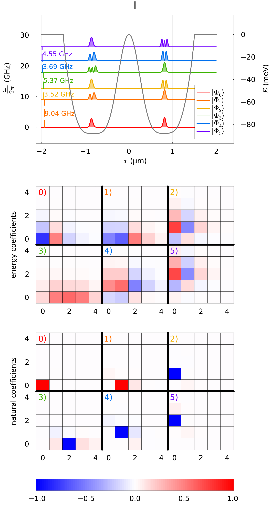
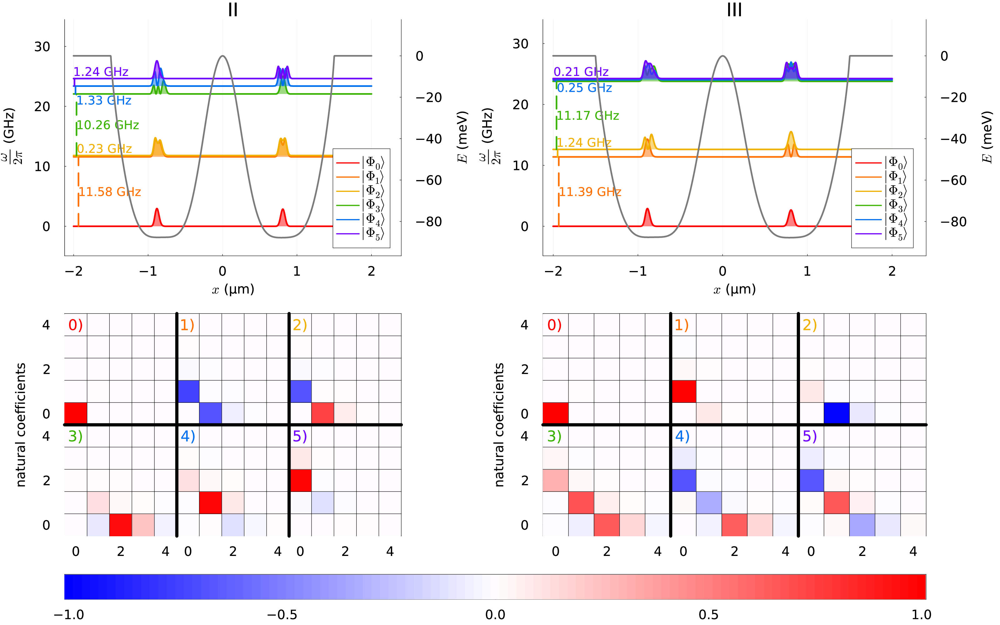

Coulomb interaction driven entanglement of electrons on helium, theory and experiment
Overview and Motivation
How to use many-body theory to design quantum circuits (Quantum engineering)- Many-body methods like F(ull)C(onfiguration)I(nteraction) theory with
- Adaptive basis sets (see for example Sigmundson et al arXiv:2111.09638)
- Time dependence
- Optimization of experimental parameter
- Feedback from experiment
- Finding optimal parameters for tuning of entanglement
- Numerical experiments to mimick real systems, using many-body methods to develop quantum twins (inspired by for example work by Herschel Rabitz on Control of quantum phenomena, see New Journal of Physics 12 (2010) 075008)!
Many people to thank
Niyaz Beysengulov and Johannes Pollanen (experiment, Physics); Zachary Stewart, Jared Weidman, and Angela Wilson (quantum chemistry)
Øyvind Sigmundson Schøyen, Stian Dysthe Bilek, and Håkon Emil Kristiansen (Physics and quantum chemistry). In addition collaboration on point defects with Marianne Bathen and Lasse Vines.
What is this talk about?
Here we describe a method for generating motional entanglement between two electrons trapped above the surface of superfluid helium. In this proposed scheme these electronic charge qubits are laterally confined via electrostatic gates to create an anharmonic trapping potential. When the system is cooled to sufficiently low temperature these in-plane charge qubit states are quantized and circuit quantum electrodynamic methods can be used to control and readout single qubit operations. Perspectives for quantum simulations with quantum dots systems will be discussed.
To read more
- See Single electrons on solid neon as a solid-state qubit platform, David Schuster et al, Nature 605, 46–50 (2022)
- See Mark Dykman et al, Spin dynamics in quantum dots on liquid helium, PRB 107. 035437 (2023) at https://link.aps.org/doi/10.1103/PhysRevB.107.035437.
Experimental set up

- (a) Schematic of the microdevice, where two electrons are trapped in a double-well potential created by electrodes 1-7. The read-out is provided by two superconducting resonators dispersively coupled to electron's in-plane motional states.
- (b) Coupling constants from each individual electrode beneath the helium layer.
- (c+d) The electron's energy in a double-well electrostatic potential (solid line). Dashed and dot-dashed lines represent the harmonic approximations of left and right wells respectively.
Literature and more reading
- Justyna P. Zwolak and Jacob M. Taylor, Rev. Mod. Phys. 95, 011006, Advances in automation of quantum dot devices control
- Pollanen and many other, Accelerating Progress Towards Practical Quantum Advantage: The Quantum Technology Demonstration Project Roadmap
- Osada et al, introduction to quantum technologies, Springer, 2022
- Original inspiration a series of articles of Loss and DiVincenzo from the nineties, Quantum Computation with Quantum Dots
Quantum Engineering
- be scalable
- have qubits that can be entangled
- have reliable initializations protocols to a standard state
- have a set of universal quantum gates to control the quantum evolution
- have a coherence time much longer than the gate operation time
- have a reliable read-out mechanism for measuring the qubit states
- ...more
Candidate systems
- Superconducting Josephon junctions
- Single photons
- Trapped ions and atoms
- Nuclear Magnetic Resonance
- Quantum dots, experiments at MSU
- Point Defects in semiconductors
- ...more
Electrons (quantum dots) on superfluid helium
Electrons on superfluid helium represent a promising platform for investigating strongly-coupled qubits.
Therefore a systematic investigation of the controlled generation of entanglement between two trapped electrons under the influence of coherent microwave driving pulses, taking into account the effects of the Coulomb interaction between electrons, is of significant importance for quantum information processing using trapped electrons.
Entanglement
Entanglement is the fundamental characteristic that distinguishes quantum systems composed of two or more coupled objects from their classical counterparts. The study of entanglement in precisely engineered quantum systems with countably many degrees of freedom is at the forefront of modern physics and is a key resource in quantum information science (QIS). This is particularly true in the development of two-qubit logic for quantum computation.
The generation of two-qubit entanglement has been demonstrated in a wide variety of physical systems used in present-day quantum computing, including superconducting circuits, trapped ions, semiconductor quantum dots, color-center defects in diamond, and neutral atoms in optical lattices, just to name a few.
More on Entanglement
Generating an entanglement between two quantum systems rely on exploiting interactions in a controllable way. The details in the interaction Hamiltonian between two systems defines the protocol schemes for two-qubit logic.
In superconducting circuits the interaction between qubits may arise from direct capacitive coupling between circuit elements or by indirect coupling of two qubits to a common resonator (virtually populating resonator mode) which results in a non-local Hamiltonian in the form of exchange interaction. This allow to implement various schemes for entanglement, such as controlled-phase gate, resonator-induced phase gate, cross-resonance gates etc.
Entanglement gates in trapped ions and more
Entanglement gates in trapped ions are produced by means of the Coulomb interaction, where shared motional modes of two or more ions, entangled to their internal states, used for transferring excitations between ion qubits. This has been experimentally demonstrated.
In photonic quantum computing schemes two-qubit entangling operations are realized by nonlinear interactions between two photons scattering from quantum dots, plasmonic nanowires, diamond vacancy centers and others embedded into waveguides. Two-qubit gates in semiconductor quantum dots are based on spin-spin exchange interactions or generated by coupling to a superconducting resonator via artificial spin-orbit interaction.
A warm-up problem, avoided level crossing and some math
The avoided crossing plays a central role in quantum simulations. It results from the coherent transfer of the population between the state \( \vert 0\rangle \) and the state \( \vert 1\rangle \). When we say coherent we mean that the quantumness and entanglement are preserved and the system follows our equation of motion (the Schroedinger equation) as expected. In real experiment it is not that simple.
In quantum technology, different quantum systems are coupled to enable various quantum state transfers and manipulations. Experimentally, avoided crossing of the energy levels, is one of the first feature to look for since it manifests the signature of preservation of quantumness and clean coupling between states in the experimental setup.
Reminder on density matrices
We have the spectral decomposition of a given operator \( \boldsymbol{A} \) given by
$$
\boldsymbol{A}=\sum_i\lambda_i\vert i \rangle\langle i\vert,
$$
with the ONB \( \vert i\rangle \) being eigenvectors of \( \boldsymbol{A} \) and \( \lambda_i \) being the eigenvalues. Similarly, a operator which is a function of \( \boldsymbol{A} \) is given by
$$
f(\boldsymbol{A})=\sum_if(\boldsymbol{A})\vert i \rangle\langle i\vert.
$$
The trace of a product of matrices is cyclic, that is
$$
\mathrm{tr}[\boldsymbol{ABC}])=\mathrm{tr}[\boldsymbol{BCA}])=\mathrm{tr}[\boldsymbol{CBA}]),
$$
and we have also
$$
\mathrm{tr}[\boldsymbol{A}\vert \psi\rangle\langle\psi\vert])=\langle\psi\vert\boldsymbol{A}\vert\psi\rangle.
$$
Using the spectral decomposition we defined also the density matrix as
$$
\rho = \sum_i p_i\vert i \rangle\langle i\vert,
$$
where the probability \( p_i \) are the eigenvalues of the density matrix/operator linked with the ONB \( \vert i \rangle \).
The trace of the density matrix \( \mathrm{tr}\rho=1 \) and is invariant under unitary transformations.
Two-qubit system and definition of density matrices
This system can be thought of as composed of two subsystems \( A \) and \( B \). Each subsystem has computational basis states
$$
\vert 0\rangle_{\mathrm{A,B}}=\begin{bmatrix} 1 & 0\end{bmatrix}^T \hspace{1cm} \vert 1\rangle_{\mathrm{A,B}}=\begin{bmatrix} 0 & 1\end{bmatrix}^T.
$$
The subsystems could represent single particles or composite many-particle systems of a given symmetry. This leads to the many-body computational basis states
$$
\vert 00\rangle = \vert 0\rangle_{\mathrm{A}}\otimes \vert 0\rangle_{\mathrm{B}}=\begin{bmatrix} 1 & 0 & 0 &0\end{bmatrix}^T,
$$
and
$$
\vert 01\rangle = \vert 0\rangle_{\mathrm{A}}\otimes \vert 1\rangle_{\mathrm{B}}=\begin{bmatrix} 0 & 1 & 0 &0\end{bmatrix}^T,
$$
and
$$
\vert 10\rangle = \vert 1\rangle_{\mathrm{A}}\otimes \vert 0\rangle_{\mathrm{B}}=\begin{bmatrix} 0 & 0 & 1 &0\end{bmatrix}^T,
$$
and finally
$$
\vert 11\rangle = \vert 1\rangle_{\mathrm{A}}\otimes \vert 1\rangle_{\mathrm{B}}=\begin{bmatrix} 0 & 0 & 0 &1\end{bmatrix}^T.
$$
Hamiltonian
These computational basis states define also the eigenstates of the non-interacting Hamiltonian
$$
H_0\vert 00 \rangle = \epsilon_{00}\vert 00 \rangle,
$$
$$
H_0\vert 10 \rangle = \epsilon_{10}\vert 10 \rangle,
$$
$$
H_0\vert 01 \rangle = \epsilon_{01}\vert 01 \rangle,
$$
and
$$
H_0\vert 11 \rangle = \epsilon_{11}\vert 11 \rangle.
$$
The interacting part of the Hamiltonian \( H_{\mathrm{I}} \) is given by the tensor product of two \( \sigma_x \) and \( \sigma_z \) matrices, respectively, that is
$$
H_{\mathrm{I}}=H_x\sigma_x\otimes\sigma_x+H_z\sigma_z\otimes\sigma_z,
$$
where \( H_x \) and \( H_z \) are interaction strength parameters. Our final Hamiltonian matrix is given by
$$
\boldsymbol{H}=\begin{bmatrix} \epsilon_{00}+H_z & 0 & 0 & H_x \\
0 & \epsilon_{10}-H_z & H_x & 0 \\
0 & H_x & \epsilon_{01}-H_z & 0 \\
H_x & 0 & 0 & \epsilon_{11} +H_z \end{bmatrix}.
$$
Eigenstates
The four eigenstates of the above Hamiltonian matrix can in turn be used to define density matrices. As an example, the density matrix of the first eigenstate (lowest energy \( E_0 \)) \( \Psi_0 \) is
$$
\rho_0=\left(\alpha_{00}\vert 00 \rangle\langle 00\vert+\alpha_{10}\vert 10 \rangle\langle 10\vert+\alpha_{01}\vert 01 \rangle\langle 01\vert+\alpha_{11}\vert 11 \rangle\langle 11\vert\right),
$$
where the coefficients \( \alpha_{ij} \) are the eigenvector coefficients resulting from the solution of the above eigenvalue problem.
We can then in turn define the density matrix for the subsets \( A \) or \( B \) as
$$
\rho_A=\mathrm{Tr}_B(\rho_{0})=\langle 0 \vert \rho_{0} \vert 0\rangle_{B}+\langle 1 \vert \rho_{0} \vert 1\rangle_{B},
$$
or
$$
\rho_B=\mathrm{Tr}_A(\rho_0)=\langle 0 \vert \rho_{0} \vert 0\rangle_{A}+\langle 1 \vert \rho_{0} \vert 1\rangle_{A}.
$$
The density matrices for these subsets can be used to compute the so-called von Neumann entropy, which is one of the possible measures of entanglement.
Shannon information entropy
We define a set of random variables \( X=\{x_0,x_1,\dots,x_{n-1}\} \) with probability for an outcome \( x\in X \) given by \( p_X(x) \), the information entropy is defined as
$$
S=-\sum_{x\in X}p_X(x)\log_2{p_X(x)}.
$$
This is the standard entropy definition, normally called the Shannon entropy
Von Neumann entropy
The quantum mechanical variant is the Von Neumann entropy
$$
S=-\mathrm{Tr}[\rho\log_2{\rho}].
$$
A pure state has entropy equal zero while an entangled state has entropy larger than zero. The von-Neumann entropy is defined as
$$
S(A,B)=-\mathrm{Tr}\left(\rho_{A,B}\log_2 (\rho_{A,B})\right).
$$
Simple code example
%matplotlib inline
from matplotlib import pyplot as plt
import numpy as np
from scipy.linalg import logm, expm
def log2M(a): # base 2 matrix logarithm
return logm(a)/np.log(2.0)
dim = 4
Hamiltonian = np.zeros((dim,dim))
#number of lambda values
n = 40
lmbd = np.linspace(0.0,1.0,n)
Hx = 2.0
Hz = 3.0
# Non-diagonal part as sigma_x tensor product with sigma_x
sx = np.matrix([[0,1],[1,0]])
sx2 = Hx*np.kron(sx, sx)
# Diagonal part as sigma_z tensor product with sigma_z
sz = np.matrix([[1,0],[0,-1]])
sz2 = Hz*np.kron(sz, sz)
noninteracting = [0.0, 2.5, 6.5, 7.0]
D = np.diag(noninteracting)
Eigenvalue = np.zeros((dim,n))
Entropy = np.zeros(n)
for i in range(n):
Hamiltonian = lmbd[i]*(sx2+sz2)+D
# diagonalize and obtain eigenvalues, not necessarily sorted
EigValues, EigVectors = np.linalg.eig(Hamiltonian)
# sort eigenvectors and eigenvalues
permute = EigValues.argsort()
EigValues = EigValues[permute]
EigVectors = EigVectors[:,permute]
# Compute density matrix for selected system state, here ground state
DensityMatrix = np.zeros((dim,dim))
DensityMatrix = np.outer(EigVectors[:,0],EigVectors[:,0])
# Project down on substates and find density matrix for subsystem
d = np.matrix([[1,0],[0,1]])
v1 = [1.0,0.0]
proj1 = np.kron(v1,d)
x1 = proj1 @ DensityMatrix @ proj1.T
v2 = [0.0,1.0]
proj2 = np.kron(v2,d)
x2 = proj2 @ DensityMatrix @ proj2.T
# Total density matrix for subsystem
total = x1+x2
# von Neumann Entropy for subsystem
Entropy[i] = -np.matrix.trace(total @ log2M(total))
# Plotting eigenvalues and entropy as functions of interaction strengths
Eigenvalue[0,i] = EigValues[0]
Eigenvalue[1,i] = EigValues[1]
Eigenvalue[2,i] = EigValues[2]
Eigenvalue[3,i] = EigValues[3]
plt.plot(lmbd, Eigenvalue[0,:] ,'b-',lmbd, Eigenvalue[1,:],'g-',)
plt.plot(lmbd, Eigenvalue[2,:] ,'r-',lmbd, Eigenvalue[3,:],'y-',)
plt.xlabel('$\lambda$')
plt.ylabel('Eigenvalues')
plt.show()
plt.plot(lmbd, Entropy)
plt.xlabel('$\lambda$')
plt.ylabel('Entropy')
plt.show
Short discussion
The example here shows the above von Neumann entropy based on the density matrix for the lowest many-body state. We see clearly a jump in the entropy around the point where we have a level crossing. At interaction strenght \( \lambda=0 \) we have many-body states purely defined by their computational basis states. As we switch on the interaction strength, we obtain an increased degree of mixing and the entropy increases till we reach the level crossing point where we see an additional and sudden increase in entropy. Similar behaviors are observed for the other states. The most important result from this example is that entanglement is driven by the Hamiltonian itself and the strength of the interaction matrix elements.
Quantum dots and the Coulomb interaction
Coulomb interaction governed entanglement can be realized in the system of electrons on the surface of superfluid helium, where qubit states are formed by in-plane lateral motional or out-of plane Rydberg states. Trapped near the surface of liquid helium these states have different spatial charge configurations and the wavefunctions of different electrons do not overlap.
This results in a strong exchange free Coulomb interaction which depends on the states of the electrons. The lack of disorder in the systems also leads to slow electron decoherence, which has attracted interest to the system as a candidate for quantum information processing.
Electrons on helium is another qubit platform
To our knowledge two qubit gates have never been discussed in a proper manner for these systems.
The static Coulomb interaction arises from a virtual photon exchange process between two charge particles according to quantum electrodynamics. This results in a correlated motion of two charges generating quantum entanglement.
Surface state electrons (SSE)
Surface state electrons (SSE) 'floating' above liquid helium originates from quantization of electron's perpendicular to the surface motion in a trapping potential formed by attractive force from image charge and a large \( \sim \) 1 eV barrier at the liquid-vacuum interface. At low temperatures the SSE are trapped in the lowest Rydberg state for vertical motion some 11 nm above the helium surface, which is perfectly clean and has a permittivity close to that of vacuum.
The weak interaction with enviroment, which is mainly governed by interaction with quantized surface capillary waves (ripplons) and bulk phonons, ensures long coherence times - a vital ingredient for any qubit platform. SSE's in-plane motion can be further localized by using microdevices on the length scales approaching the interelectron separation (at the order of one micron).
Building the solutions
To investigate our model, which consists of two electrons confined to a one-dimensional external potential, we utilized the method of exact diagonalization to solve the two-body Schrödinger equation. We build a two-particle wave function from a set of single-particle functions. The representation of the one-body Hamiltonian's eigenstates on a discrete grid offers us the flexibility to select the external potential of our choice, and it also fits the interpolated potential very effectively.
Calculational details
As we are only studying a model comprised of two electrons restricted to move in a one-dimensional external potential we have employed full configuration interaction (shell-model in NP) theory to compute the steady-state properties of the system. We have used a static, one-dimensional, grid-based basis set for the single-particle functions. This allows for flexibility in the choice of the external potential, and fits the interpolated potential particularly well.
The Hamiltonian of \( N \) interacting electrons confined by some potential \( v(r) \) can be written on general form
$$
\begin{equation}
\hat{H} = \sum_{i=1}^N \left(-\frac{1}{2}\nabla_i^2 + v(r_i) \right) + \sum_{i < j} \hat{u}(r_i, r_j),
\tag{1}
\end{equation}
$$
where \( \hat{u}(i,j) \) is the electron-electron (Coulomb) interaction.
One-dimensional system
We consider a one-dimensional model where the confining potential is parametrized/obtained from finite element calculations. The bare Coulomb interaction is divergent in 1D (REF) and it is customary to use a smoothed Coulomb interaction given by
$$
\begin{align}
u(x_1, x_2) = \frac{\alpha}{\sqrt{(x_1 - x_2)^2 + a^2}},
\tag{2}
\end{align}
$$
where \( \alpha \) adjusts the strength of the interaction and \( a \) removes the singularity at \( x_1 = x_2 \).
The single-particle functions are chosen as the eigenfunctions of the single-particle Hamiltonian
$$
\begin{equation}
\left( -\frac{d^2}{dx^2}+v(x) \right) \psi_p(x) = \epsilon_p \psi_p(x).
\tag{3}
\end{equation}
$$
Details 1
By entirely factoring out the spin component of the problem (as the singlet and triplet states will be degenerate), we can treat the two electrons as distinguishable particles, with one electron located in the left well and the other electron situated in the right well.
Details 2
We solve the full two-body problem using exact diagonalization. The wave function ansatz is then given by a product of Hartree single-particle states
$$
\begin{align}
\vert\Phi_I\rangle &= \sum_{k = 0}^{N^L} \sum_{l = 0}^{N^R} C_{kl, I}
\vert \phi^{L}_k \phi^{R}_l\rangle,
\tag{4}
\end{align}
$$
where no symmetry is assumed for the wavefunction as the particles are distinguishable, and the index \( I = (i, j) = iN^R + j \) is a compound index denoting the excited two-body state we are looking at.
Hartree method
In the Hartree-method for two distinguishable particles we approximate the ground state \( \vert\Phi_0\rangle \) of the full Hamiltonian \( \hat{H} \) as the product state
$$
\vert\Phi_0\rangle \approx \vert\Psi\rangle= \vert\phi^L_0 \phi^R_0\rangle,
$$
under the constraint that the Hartree orbitals are orthonormal.
Measuring the degree of entanglement
Given that we are dealing with a bipartite quantum system, a natural measure for characterizing entanglement is the von Neumann entropy discussed above. We defined it as
$$
S= -\mathrm{tr}(\hat{\rho}\log_2(\hat{\rho})),
$$
where \( \hat{\rho} \) is the density operator/matrix.
More entropy and Schmidt decomposition
As the Hamiltonian eigenstates are pure states, we can evaluate their entanglement by bypassing the construction of the density operator and use the Schmidt decomposition instead. Specifically, for a given two-body wave function \( \vert \Psi\rangle \) expressed in terms of the Hartree product states, we can write
$$
\begin{align*}
\vert\Psi\rangle &= \sum_{k = 0}^{N^L} \sum_{l = 0}^{N^R} C_{kl}\vert\phi^L_k \phi^R_l\rangle=\sum_{p = 0}^{\tilde{N}}\sigma_{p}\vert\psi^L_p \psi^R_p\rangle,
\end{align*}
$$
where \( C_{kl} = \sum_{p = 0}^{\tilde{N}} U_{kp}\sigma_{p} V^{*}_{lp} \) is the singular value decomposition of the two-body coefficients. We have
$$
\begin{gather*}
\vert\psi^L_p\rangle\equiv \sum_{k = 0}^{N^L} U_{kp} \vert\phi^L_k\rangle,
\qquad \vert\psi^R_p\rangle\equiv \sum_{l = 0}^{N^R} V^{*}_{lp} \vert\phi^R_l\rangle,
\end{gather*}
$$
are the Schmidt states, \( \tilde{N} \) is either \( N^L \) or \( N^R \) depending on the definition of the singular value decomposition, and \( \sigma_p \) are the singular values with \( \sigma_p^2 \) representing the occupation of the pair \( \vert\psi^L_p \psi^R_p\rangle \).
Final Von Neumann entropy
Using the singular values, we can compute the von Neumann entropy of \( \vert\Psi\rangle \) as follows:
$$
\begin{align*}
S = -\sum_{p = 0}^{\tilde{N}}\sigma_p^2 \log_2(\sigma_p^2).
\end{align*}
$$
Results and discussions
Analysis
While the von Neumann entropy provides an objective measure of entanglement, it does not give information about which states are entangled. In order to determine which states are mixed, we can use three additional quantities.
- The first quantity are the two-body energies \( E_K \). We search for configurations where two or more energies are nearly degenerate, as this indicates a mixing of states. o The second quantity we use are the coefficients \( C_{kl} \) themselves. In the Hartree basis, these coefficients give a good indication of which states are entangled.
- And the third is the particle density. For the state \( \vert \Psi\rangle \) above, we can compute the particle density. The particle density can be used as a tool to qualitatively visualize the entanglement of a state.
Basis of left well

The energy basis of the left well in configuration I. Note that the scale differs between the left y-axis, corresponding to the frequencies of the single-particle eigenstates, and the right y-axis, which shows the energy of the potential.
Results
By adjusting the potential we can change the anharmonicities and detuning of the wells.
- What values of these give interesting interactions?
- Inspiration from superconducting qubits, Zhao et al. [ref in footnote?]
We search for well configurations corresponding to three different types of interaction between the two electrons.
- In configuration I we address both qubits independently and can thereby perform single-qubit state rotations and measurements.
- Configurations II and III correspond to avoided level crossings between two (\( E_{01}, E_{10} \)) and three (\( E_{11}, E_{20}, E_{02} \)) energy levels respectively, where the electrons' motion becomes correlated, that is they are entangled.
Energy levels as a function of voltage parameter
Figure 1: UPDATE FIGURE

Here we have plotted the transition energy from the ground state to the labeled excited state as a function of the voltage parameter \( \lambda \), which determines the voltages according to
$$
\begin{equation}
V(\lambda) = (1-\lambda)V_\mathrm{I} + \lambda V_\mathrm{III}
\tag{5}
\end{equation}
$$
Config I densities and coefficients
Figure 2: UPDATE FIGURE

These figures depict the potential wells, the one-body densities, and the active single-particle states in the Hartree basis for configuration I. No avoid crossing.
Schmidt basis for configurations II and III
Figure 3: UPDATE FIGURE

These figures depict the potential wells, the one-body densities, and the active single-particle states in the Hartree basis for configurations II and III, i.e., in the avoided crossing regimes.
Von Neumann entropy

Numerical results for the von Neumann entropy of the five lowest excited states as a function of the voltage parameter \( \lambda \). The entropies \( S_1 \) and \( S_2 \) of the \( \vert\Phi_1\rangle \) respectively \( \vert\Phi_2\rangle \) states are nearly identical. Note that the peaks in entropy corresponds to the avoided crossings.
Where we are now
- Adding time-dependent studies of two electrons in two wells in one and two dimensions
- Studies of the time-evolution of entangled states (now two electrons only)
- Use theory to find optimal experimental setup
- Expect two-electron system realized experimentally in approx \( 1 \) year, great potential for studies of quantum simulations
Plans
- Add two and three-dimensions in order to simulate in a more realistic way such many-body systems.
- Develop time-dependent FCI code, useful up to approximately 10 particles with effective (and effective Hilbert space) Hamiltonians in two and three dimensions
- Develop codes for studies of entanglement as function of time
- Do tomogrophy and extract density matrix and compare with experiment.
- Study the feasibility of various setups for quantum simulations of specific Hamiltonians such as the Lipkin model
- For larger many-body systems, study for example time-dependent CC theory